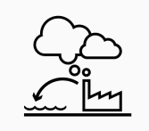

• Socio-economic Surveys.
• Assessment on Social issues like indigenous people, gender, HIV/AIDS, labor including child labor.
• Social Assessment of the project to identify impacts specifically on the poor and the vulnerable groups along the project on the corridor.
• Internal and external monitoring plan.
• Entitlement Plans with institutional arrangements.
• Public Awareness and Participation.
RESETTLEMENT & REHABILITATION ACTION PLAN
(People Minimize Negative Impact of the proposed project)
Development comes with a cost to nature and society. We at JS Environics help the Implementing agencies and Governments to minimize that cost to society and people. We are specialists at following:
• Analytical Impact Assessment of proposed project on Habitations
• Quantification of loss of structures, Land and Livelihood of Affected Families
• Preparation of Compensation and Assistance for the Affected Families
• Developing a Rehabilitation Action Plan
• Identifying and integrating livelihood opportunities
• Provide Assistance and continuous monitoring
LAND ACQUISITION PLAN
(Acquiring Growth)
Land Acquisition planning is an Integral part of any developmental project be it Highways, Railways or any other. Preparation of 3a, 3A, 3D, 3E and 3G in projects is our specialty and worked on acquisition of 2000 hectares of land till date and the Count is still going on. JS believes in land Acquisition Planning to Minimize the negative impact of proposed projects on fertile land of the community.
GENDER MAINSTREAMING
(Promoting equality and Improving Lives)
Gender mainstreaming is a vital part of promoting gender equality and it’s our motto promote the same in everyday life by providing Equal opportunities to all. We at JS Environics help our clients in
• Preparing the Gender Action Plan
• Monitoring the Implementation of Gender action plan
• Evaluation of Gender Action Plan
• Analysis and Mitigation Plan for gender-based issues
• Conducting gender sensitization workshops
• Gender sensitive Participatory Monitoring
SAFEGUARD MONITORING & EVALUATION
(Monitoring risk and Evaluating the cause)
Monitoring and evaluation are an integral part of implementation of projects and gap identification. We have specialization in conducting the monitoring and evaluation of following to help our clients in successful implementation:
• State sponsored Social welfare schemes
• States Sponsored Gender Development Schemes
• State Sponsored Education schemes
• Aided projects
• Social and Environmental Safeguards
SOCIAL AUDIT
(Finding the Social Gap)
A social audit is a formal review of a company's endeavors, procedures, and code of conduct regarding social responsibility and the company's impact on society. A social audit is an assessment of how well the company is achieving its goals or benchmarks for social responsibility. It include the following:
• Environmental impact resulting from the company's operations
• Transparency in reporting any issues regarding the effect on the public or environment.
• Accounting and financial transparency
• Community development and financial contributions
• Charitable giving
• Volunteer activity of employees
• Energy use or impact on footprint
• Work environment including safety, free of harassment, and equal opportunity
• Worker pay and benefits
• Nondiscriminatory practices
• Diversity
ENVIRONMENTAL AUDIT
(Safeguarding the Environment)
Environmental audit helps organization in safeguarding the environment and compliance of statutory Environmental guidelines and policies. We provide services of environmental audit to clients of these arenas of business:
• Water
• Waste management
• Sugar factories
• Leather tanneries
• Distilleries
• Breweries
• Slaughterhouses
• To help them meet the regulatory compliance and help them to follow ISO 14001 and OHSAS 18001
ENVIRONMENTAL MANAGEMENT PLAN
(Managing the Eco-System)
The Environment Management Plan (EMP) is a site specific plan developed to ensure that the project is implemented in an environmental sustainable manner where all contractors and subcontractors, including consultants, understand the potential environmental risks arising from the project and take appropriate actions to properly manage that risk. We Prepare the EMP for the following Sectors:
• Road and Highways
• Railways and Metros
• Bridge and Tunnels
• Buildings
• Inland waterways
• Airports
• Port and harbor
• Water supply and sanitation
RENEWABLE ENERGY OPPORTUNITIES
(A cleaner Habitat)
Pollution affects us all and the pressure on depleting perishable resources is creating havoc. The need for a sustainable energy supply is becoming more important with declining fossil energy resources, environmental pollution and climate change. We help our clients in
• Techno-Economic Feasibility Analysis.
• Identifying opportunities in cleaner fuel.
• Detailed project report and survey of:
A. Solar parks
B. Windmill farms
C. Oceanic Energy
REMEDIATION
(Decontaminating the Earth)
We have the best experts for site assessment, ground investigation, remedial design and remedial action implementation services on sites potentially affected by contamination. In addition, we are familiar with the requirements of regulators, industrial and commercial clients as well as lending institutions and legal advisors. We provide:
• Comprehensive range of site investigation techniques, both intrusive and non-intrusive
• Reviews of environmental data
• Environmental Impact Assessments, Risk Assessments and Contaminated Land Assessments
• Design and management of remediation schemes including materials and waste management
• Development of a conceptual site model
• Quantitative assessment if required, including toxicological and human health risk assessments
• Pragmatic approach to determining mitigation measures
WASTE MANAGEMENT AND RECYCLING
(Minimizing the waste and optimizing the Economy)
JS Environics has the best in the industry expert and technical know to design and implement waste management plans to reduce the waste and use it for a cleaner tomorrow. We Provide following Services to our clients:
• Waste quantification and characterization.
• Assessment of existing system and scenario in Urban Local Bodies.
• Gap assessment and planning of infrastructure needs.
• Assessment of recycling potential of the waste and suggesting technology options.
• Development plan for land fill- design.
• Design of processing system- i.e. mechanical composting/ vermin composting.
• Preparation of operations and maintenance (O&M) plans and cost recovery models/mechanisms.
• Training and capacity building and information, education and communication programmes.
ENVIRONMENTAL MANAGEMENT SYSTEMS
(Managing Environmental Performance)
An environmental management system (EMS) is a tool to implement a structured program of continual improvement in environmental performance. An EMS follows procedures drawn from established business management practices and principles of quality management systems. We help our clients in
• Carrying out initial environmental review before implementing the management system
• Legal compliance and target best practice
• Implementing an independent EMS validation program
• Publication of an independently validated annual environmental statement detailing environmental performance

EMISSIONS AND CLIMATE CHANGE
(Emitting Greenery)
Analyzing and formulating policy for climate change and GHG emissions requires in-depth understanding of a range of technical, commercial, institutional and governance aspects of adaptation and mitigation measures for climate change. These measures could be at national, sub-national or local level. Understanding of international aspects and negotiations is critical for successful design and implementation of these measures.
Our team of highly experienced professionals has worked with several relevant global institutions in design, development and review of such measures.